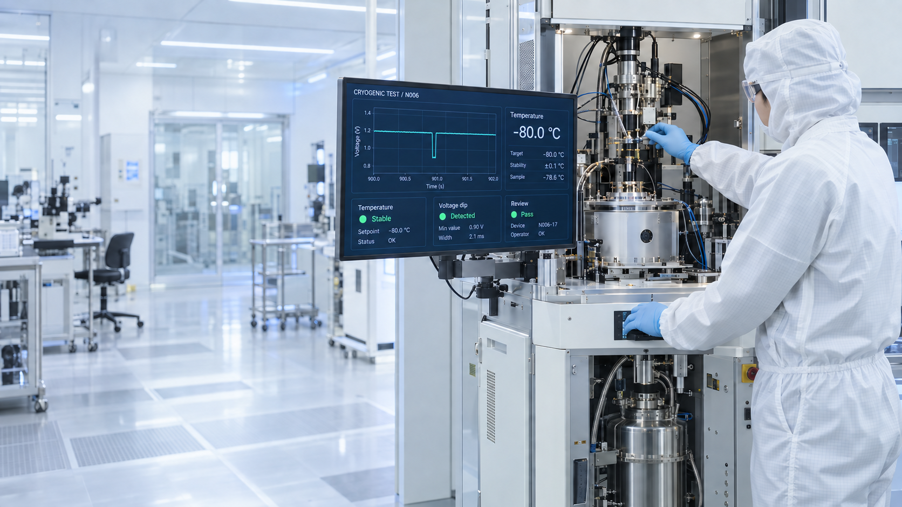
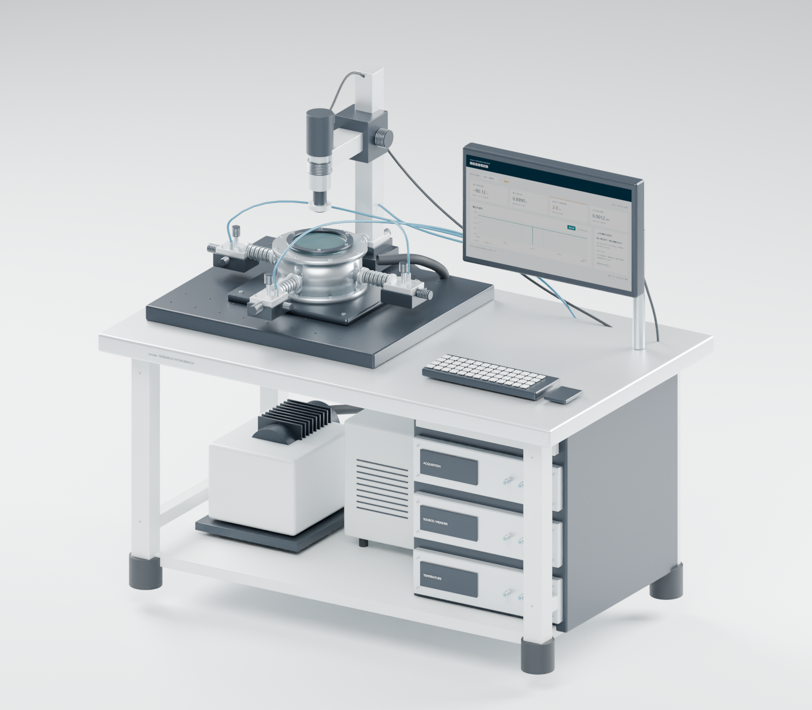

試験条件を入力
温度・通電条件・保持時間を操作画面で設定。
PERSONAL PORTFOLIO / R&D
装置制御とデータ解析を、AIでつなぐ。
集計・比較・報告を自動化し、
次の実験を考える時間を増やします。

01 / SCOPE
データを集める、変化を見つける、次の条件を比べる。
装置とソフトをつなぎ、日々の試験を進めやすくします。
02 / TEST DATA & ANALYSIS
試料を冷やして通電し、温度・圧力・電圧を記録。
小さな変化を見つけ、条件の比較と再試験につなげます。

全点の集計で短い電圧低下を抽出し、温度や弁の動作と比較します。AIは接触・電源・温度などの原因候補を整理し、条件を一つずつ変える試験案と報告をまとめます。
試料温度とチャック温度は別チャンネルで測定します。以下の表示は合成データです。
集計から原因比較、再試験案、報告までを一つの工程に。
試料とチャックの温度差、安定区間を集計します。
電圧の低下区間と継続時間を抽出します。
接触、電源、温度、弁の動作の関係を比較します。
条件を1つずつ変える試験案を作成します。
根拠と確認項目を添えて、試験担当者に報告します。
INTERACTIVE / 操作できます
試験を選ぶ → 波形を拡大する → 確認項目を読む
| 時刻（s） | 電圧（V） |
|---|
集計と比較を自動化し、変化の理由を考えること、現物を確かめること、次の条件を選ぶことに時間を使えます。
03 / CONTROL & AUTOMATION
温調・通電・計測のシーケンスから、
操作画面、記録、解析への受け渡しまでつなげます。
温度・通電条件・保持時間を操作画面で設定。
温調、通電、弁動作、計測の順序を制御。
試料・チャック温度、電圧、圧力、弁の動作を保存。
条件別に集計し、変化点と再試験案を画面へ。
装置側の保護設計
非常停止、扉ロック、温度インターロック、過電流保護を制御に組み込みます。温度上限リレーによるヒーターの独立遮断も、装置の保護系として設計します。
この試験装置の設計例です。
| 機能 | 入力条件 | 動作 | 復旧条件 |
|---|---|---|---|
| 非常停止 | 非常停止ボタンの押下 | 通電電源、ヒーター、ガス供給弁を遮断します。チャックの冷却と記録は継続します。 | ボタンを解除し、試験担当者が操作画面で復帰操作を行います。通電は再開条件の確認後に再開します。 |
| 扉ロック | チャンバー扉の開放を検出 | 通電を停止し、扉の開放時刻を記録します。 | 扉を閉じ、担当者が再開操作を行います。 |
| 温度インターロック | 試料温度またはチャック温度が設定範囲外 | 通電の開始を許可しません。通電中なら停止します。 | 温度が範囲内に戻り、担当者が再開操作を行います。 |
| 過電流保護 | 電流が設定上限を超過 | 電源出力を遮断し、直前の波形と時刻を保存します。 | 担当者が原因を確認し、上限値を再設定して再開します。 |
| 独立した遮断系 | 温度上限リレーの作動（PLCとは独立） | ヒーター電源を機械的に遮断します。 | 担当者がリレーを手動でリセットします。 |
04 / AI IN THE WORKFLOW
AIは解析・比較・報告を分担。
原記録の照合と結果の整理まで、工程として組みます。
依頼を分け、装置ごとの結果を集め、次の試験案をまとめます。
DEVICE A
原記録と照合
接触条件と温度差を比べ、冷却条件の検討へ。
DEVICE B
原波形と照合
接触・電源・弁の関係を比べ、原因の切り分けへ。
DEVICE C
動作時刻と照合
応答の遅れと安定性を比べ、動作条件の検討へ。
集計はプログラム、比較と試験案はAI。結果と根拠を、研究者が見渡せる形にまとめます。
作業内容と必要な精度に応じてモデルを選び、APIの利用量を試算します。
Claude Code / Codexの構成例。
05 / TEST OVERVIEW
確認が必要な試験を絞り込み、数値と注目点を比較。
「波形を見る」から、このページ内のモニターへ進めます。
公開用の合成データ8試験を使った表示例。波形モニターと同じ記録を一覧にしています。
試験条件の比較、検査結果の一覧化、計測ログの自動集計、異常箇所から原記録への移動など、確認と報告の手間を減らす画面に応用できます。
06 / 3D & DRAWING
装置の配置、調整する場所、部品の取付位置を共有。
立体と図面を切り替え、具体的な検討につなげます。
チャンバー、プローブ、計測器、付属モニターを載せた研究用ベンチ。
装置の構想モデルをBlenderで作成し、配置や内部構成を検討できます。掲載はレンダリング画像と図面です。.blend / .glb形式での受け渡しにも対応します。
正面図・平面図・立体図と、穴位置・穴径・板厚を示す部品図で、構造と寸法を共有できます。
部品、アセンブリ、図面を作成します。業務用のアカウントと作業環境は依頼元で用意する形です。
表示は例題の構想設計です。
07 / WORK & COST
解析・比較・報告をAIとプログラムに分担させる費用例。
案件に応じてモデルを選び、必要なAPI利用量を見積もります。
人に外注する場合（試算）
160時間 × 時間単価2万円
社内でAI処理を使う場合（試算）
API利用料 ＋ 社内工数
試算の対象：段取り、計算、照合、報告の作業時間。試験の暴露時間・保持時間は対象外です。社内工数は金額に含めていません。
月100タスクをSonnet 5（作業）・Opus 5（照合）・Fable 5.1（指揮）で処理する想定。月間入力3,200万・出力560万トークン、$200 × 想定150円 = 30,000円（税別）です。
原波形はプログラムで集計し、AIには比較に必要な区間と結果を渡します。実際のAPI費は利用量で変わり、社内工数・Enterprise契約料・初期構築費は別です。
08 / BUSINESS DATA
Anthropic API・Claude Team / Enterprise、OpenAI API・ChatGPT Business / Enterpriseの入出力は、既定でモデル学習に使われません。
会社で承認した契約・組織アカウントを使い、守秘・保存期間・データ共有設定を利用条件に合わせます。
原記録は社内で管理し、処理に必要な情報を渡す構成を設計します。
CONTACT
試験データの解析、装置制御、監視画面、3Dモデル・図面。
必要な部分を組み合わせ、研究開発と日々の業務を進めやすくします。
ご相談は、ご案内メールへの返信、または応募先のメッセージ機能からご連絡ください。